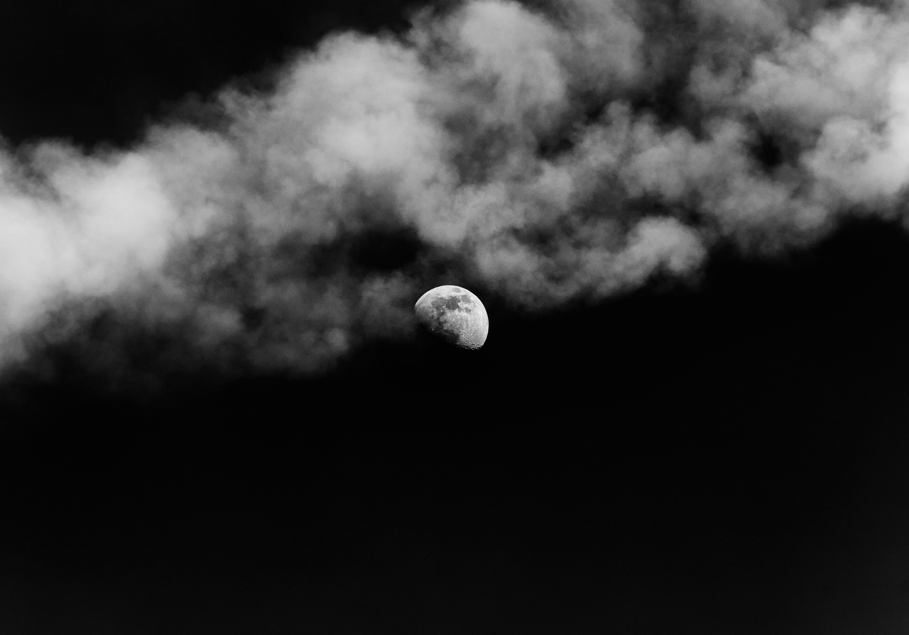

The There

Nothing is worth seeing there. Here I work, eat, sleep, think, do, stop, shit, hum, tick, blink, groan, laugh—and so I should need little else, and there is little else I need as I sit and lie, sit and lie, perhaps walk, jump, skip to and from, but never to and from there, only to and from here, for here is where I live, and there is where I do not; and really, everything lives here, everything is here, everything can be here, so what need do I have for there? Because while here is not there, there can always be here, although, of course, it is not really there, but it is there enough, and is that not all one needs? For there to be here? I for one find it favorable: an arrangement that fits into any schedule at any time, any place—any here, that is, because here is where the there arrives neatly, not so precisely, but briskly, whenever the here calls for it.
There are murmurs, however, that the there is not there, but rather was there. They say the here has changed the there. I cannot claim the same with any authority because it has been very long since I have seen the there there, to the point where it feels like I have only seen the there here. But who is to say that the there here is not the same as the there there? I can see the there whenever I desire, and although it would be here, it very well could be there, too, for while it would not be the there certainly it would look like the there and that is enough for me.
I saw a scene of the there recently enough to remember it, though I do not recall how, perhaps it was a picture or a dream or a video or a vision, and it surprised me because it looked so much like the there that I remember going to see when the there used to be worth seeing and when the trip did not feel overlong and when the wind did not slow us down and when the hail did not fall like the acorns from that lone oak tree that used to stand in our front yard, towering over our little house at the top of the hill that made up our street, our house with the one window on the top floor under the attic stairs that could see over our neighbor’s roof with the chimney and the smoke in the winter, always the smoke wafting from that dirty dusted brown brick chimney in disordered plumes, so that, when the night was right, when the there allowed it, we would watch the moon shine through the oak tree’s branches that sectioned the sky like colonial roads drawn on an old map, and after looking our fill, my brothers and sisters and I would reconvene and discuss our perspectives, how the moon looked that night (‘Brighter, I’m sure of it!’) or how it moved (‘It’s getting closer, don’t you see?’), until everyone spoke their turn, at which point some would go downstairs, already bored with that there-moon, but not everyone, the remaining lookers instead sending a volunteer to the old leather couch in the corner to retrieve the hidden little handheld out-of-focus telescope that we used to hide under the left side of the couch on the floor toward the wall, the telescope that I liked very much because it had a tiny dead moth stuck to the lens on the inside, so that when one looked through the telescope at the right angle it would seem as though a giant moth were suspended in flight next to the moon, enticed by the moonlight, that cosmic lamp, a scene made all the more interesting in the winter months by our neighbor’s chimney and its smoke, for the smoke seemed to me to be the celestial effluence of some undetectable and unidentifiable preternatural antagonist, possibly engaged in a centuries-long battle with this giant moth that attacked the fragile moon to where, like the glass lamp the moth seemed to believe it was, the moon was on the brink of shattering, the bare branches of the oak tree still splitting the sky and adding fractured lines to the scene but the sky too dark to parse the broken bits save for the lines illuminated overtop the moon itself; and this was a scene that would stay with me long after the remaining lookers sent the volunteer once again to the couch in the corner to store away the telescope and return downstairs for bed, a difficult task for me because, upon lying down, I would look at the ceiling of my bedroom and imagine I was looking out the window and at the moon once more, which in a sense I was, for my bedroom was directly under that room with the window under the stairs that led to the attic, and my bed directly under the couch, meaning there were probably many nights where, if somehow I acquired spontaneously the ability to see through the walls of my house, I would have been looking directly at the telescope that I so loved, the telescope that gave me glimpses of the there that so captivated me in those younger years, the there that I loved so dearly and that I did not at the time realize the observing and enjoying and loving of which would be inevitably limited, effectively prohibited in any substantial sense, something I could not do forever, not for any typical reason like moving away or growing up or losing one’s innocence, no, but because with time the activity lost its inherent value, either because the scenes of the there themselves were no longer there or because they found out how to bring the scenes of the there here, like that picture or dream or video or vision, in a way that made the there unremarkable and, in a word, unneeded.
Or so they say. I, for one, attached as I am to the memories I have of the there, vague as they are, cannot find it within me to disparage the there like so many have taken to doing these days. But also I do not have it within me to disagree. As I hope I have made clear, the there is here, the here that insists and persists away from and out of yet by way of the there, so what more could we need? What more is there to do but remain?